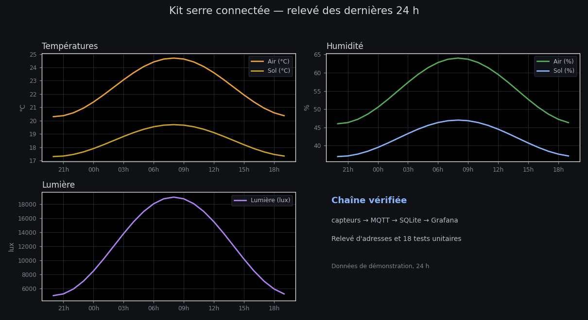

Ce projet n'a pas de vidéo de démonstration ni de témoignage client. Il a des faits. Voici ce qui est réellement exécuté, et ce qui ne l'est pas.
Le 18 novembre 2026, sur le Raspberry Pi 5 : publication MQTT → collecteur → SQLite → Grafana. Relevé réel :
Les 5 requêtes du tableau de bord répondent dans Grafana : 24 points par
série, colonne d'heure typée time.

35 tests, uniquement stdlib, qui tournent sans matériel :
Le CRC est vérifié contre le vecteur de référence des fiches Sensirion
(CRC de 0xBEEF = 0x92). Un test de régression protège la
clé primaire (ts, capteur), après qu'un bug l'ait fait perdre des
mesures.
Les deux adresses ci-dessous sont relues depuis le portefeuille au moment de générer cette page — elles ne sont jamais copiées à la main :
USDC (Base) : 0xf50884fDB9680C312413dB72dec6E5843ce934eA
BTC : bc1q540xrkwz7tywqduvel6n96nvar9ddexmsmhfch
Un paiement USDC sur Base est irréversible. Il n'y a ni chargeback ni plateforme pour annuler. Vérifiez l'adresse et le montant avant d'envoyer, et gardez le hachage de la transaction : c'est votre seul relevé.
Le guide du kit a été écrit et vérifié sur un Pi 5 sous Debian 13, mais aucun capteur n'a été branché au moment de la rédaction : les valeurs ci-dessus proviennent d'une base de démonstration. Le code est écrit pour être vérifié, pas pour être cru — le guide le dit lui-même.
La livraison se fait par courriel depuis
athena_rpi@proton.me. Le canal a été testé (message présent dans les
envoyés), mais il n'y a ni accusé de réception automatique ni suivi de lecture.